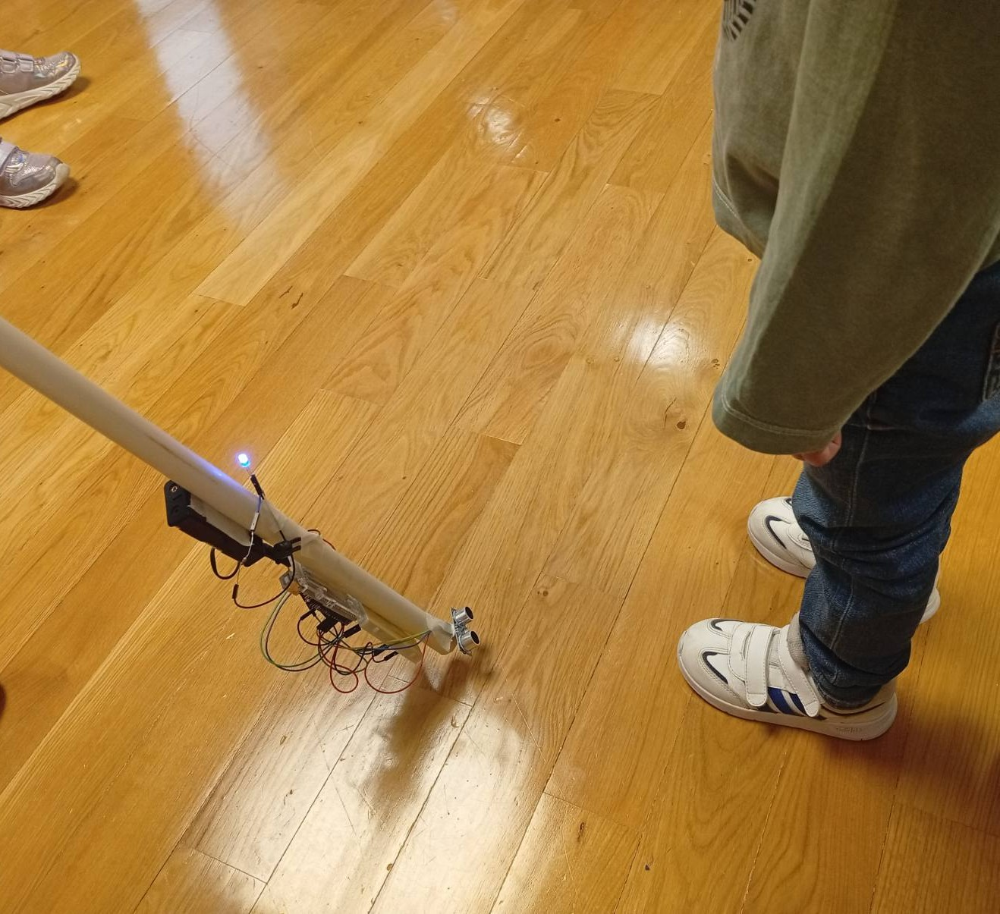
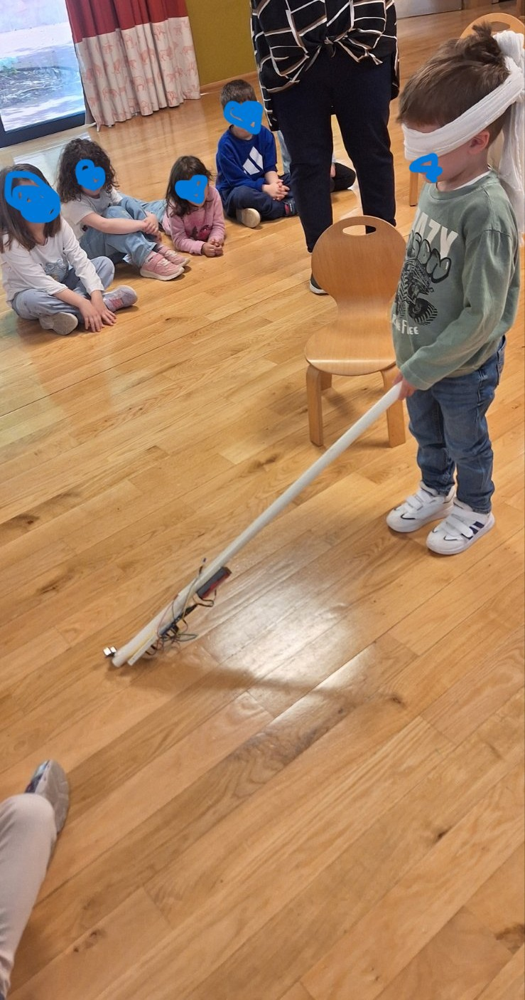

Ένα inclusive STEM project από μαθητές νηπιαγωγείου που σχεδίασαν τεχνολογικές λύσεις προσβασιμότητας για άτομα με προβλήματα όρασης χρησιμοποιώντας Arduino.
Accessibility • Inclusion • STEM • Empathy
Children explored sensors, circuits, coding and engineering through real-world problems.
Students investigated accessibility challenges and designed assistive technology solutions.
The project combines robotics, social impact and collaborative learning.
Detects obstacles using ultrasonic sensors and alerts users with sound feedback.
Detects ground gaps and stairs helping users navigate more safely.
Quality Education
Innovation & Infrastructure
Reduced Inequalities


Accessibility is not a privilege — it is a human right.
Through this project, children discovered that technology can improve people's lives and help create a more inclusive society.
Kindergarten Classrooms
Assistive Prototypes
Engineering & Coding Skills
4 • 9 • 10
“Technology becomes meaningful when it helps people feel safer, included and empowered.”
Designed through empathy, collaboration and STEM learning.